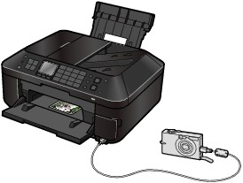
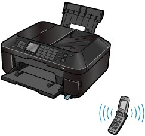

Printing Photos from a PictBridge Compliant Device
Printing Photos from a PictBridge Compliant DeviceYou can connect the PictBridge compliant device to this machine with a USB cable that is recommended by the device's manufacturer, and print saved images directly.
For details on how to print saved images connecting the PictBridge compliant device, refer to the on-screen manual: Advanced Guide.
For details on the print settings on the PictBridge compliant device, refer to the instruction manual supplied with the device.

Connectable devices:
Any PictBridge compliant device can be connected to this machine regardless of the manufacturer or model as long as it is compliant with the PictBridge Standard.
 Important Important
|
 Note Note
(PictBridge) A device with this mark is PictBridge compliant. |
Printable image data format:
This machine accepts images* taken with a camera compliant with the Design rule for Camera File system and PNG files.
* Exif 2.2/2.21/2.3 compliant
| Note
|
Printing Photos from a Wireless Communication DeviceUsing the optional Bluetooth Unit BU-30, you can print wirelessly photographs from a camera-equipped mobile phone.
For details on printing from a computer that supports Bluetooth, refer to the on-screen manual: Advanced Guide.

 To change the media type or page size when printing from a mobile phone, press the Setup button, then select Mobile phone print settings in Device settings.
To change the media type or page size when printing from a mobile phone, press the Setup button, then select Mobile phone print settings in Device settings.
To change the device name or passkey of the machine for when printing from a Bluetooth compatible device, press the Setup button, then select Bluetooth settings in Device settings.
| Note
See Printing Photos.
* To know whether your mobile phone is compatible with those standards, consult the manufacturer.
* Not all mobile phone types that meet the above requirements have been tested for normal operation.
|